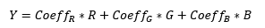
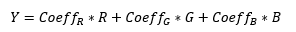

Because a sensor may have different color sensitivity or IR cut filter may have
module-to-module variations, each module has differences in RGB response in the same
scene. We know this because luma is calculated as:


The module-to-module variation of RGB response impacts the result of pixel luma. Even the same module is impacted under different CCT. The AWB gain for luma compensation feature helps to auto-calibrate RBG response of different CCT and module-to-module variations by using D50 manual white balance gain of the golden module. This feature gives almost the same output luma with the typical/max/min module under same scene.
-
Next to Ref Gain, click
 and enter the D50 gains
for each reference gain in the Ref Gain[0],
Ref Gain[1], and Ref Gain[2] parameters.
Ref gain [0], [1], and [3] correspond to R, G, and B channels, respectively.
and enter the D50 gains
for each reference gain in the Ref Gain[0],
Ref Gain[1], and Ref Gain[2] parameters.
Ref gain [0], [1], and [3] correspond to R, G, and B channels, respectively.